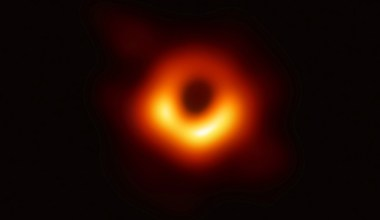

Descoperiri si inventii ale secolului XXI
-

CURIOSITY ROVER
Mars Science Laboratory, prescurtat MSL, este o sondă spațială a agenției spațiale americane NASA lansată spre planeta Marte. Sarcina principală a misiunii MSL este de a cerceta dacă pe Marte poate exista sau chiar a existat viață. Componenta cheie a sondei MSL este vehiculul de teren (rover) „Curiosity” (în engleză: „Curiozitate”), care după amartizare urmează să se deplaseze autonom și să execute toate experimentele și cercetările științifice prevăzute. Curiosity are mărimea unui mic autoturism și cântărește 900 kg, devenind astfel cel mai greu obiect creat de mâna omului și lansat pe Marte vreodată (vehiculele sondelor Viking cântăreau sub 600 kg)
Afla mai mult -

STATIA SPATIALA INTERNATIONALA
Ideea unei platforme care să orbiteze Pământul sau chiar alte corpuri cosmice nu este deloc nouă, iar Staţia Spaţială Internaţională nu este prima de acest fel, însă, cel puţin până astăzi, este cea mai importantă reuşită în această ramură a explorării spaţiale. Timp de două decenii, Staţia Spaţială Internaţională şi-a consolidat acest succes nu numai în plan ştiinţific, cât şi în plan social şi politic, aducând laolaltă ţări care în trecut au fost rivale. Din punct de vedere tehnologic şi ştiinţific, trebuie menţionat că actuala Staţie Spaţială nu se putea realiza fără să fi existat lecţiile învăţate în urma lansării altor staţii spaţiale în istoria (scurtă) a explorării cosmosului.
Read More -

GAURI NEGRE
Gaura neagră măsoară 40 de miliarde de kilometri - de trei milioane de ori mai mare decât Pământul - şi a fost descrisă de cercetători drept "un monstru", potrivit BBC. Gaura neagră este la aproximativ 55 de milioane de ani lumină distanţă şi a fost fotografiată de o reţea de opt telescoape din întreaga lume. Pentru a surprinde o imagine a unei găuri negre, cercetătorii au combinat puterea a opt radiotelescoape din jurul lumii folosind o tehnologie numită Very-Long-Baseline-Interferometry (VLBI), potrivit European Southern Observatory, care face parte din EHT. Aceasta creează un telescop virtual aproape de aceeaşi mărime cu cea a Pământului.
Read More -
TELESCOPUL HUBBLE
Telescopul spațial Hubble este un telescop plasat pe orbită în jurul Pământului, numit așa după astronomul american Edwin Hubble. Este poziționat în afara atmosferei terestre,telescopul putând capta informații și în spectrul ultraviole. De la lansarea lui în 1990 a devenit unul dintre cele mai importante instrumente din istoria astronomiei. Cu el astronomii au făcut numeroase observații, care au dus la importante descoperiri în astrofizică. Camera fotografică cu câmp foarte larg de pe Hubble furnizează cele mai detaliate imagini în lumină vizibilă realizate vreodată.
Read More -
OPPORTUNITY ROVER
Vehiculul spațial Opportunity, denumit oficial Mars Exploration Rover - B sau MER-B, este al doilea dintre cele două vehicule spațiale de tip „rover” ale misiunii Mars Exploration Rover a organizației NASA. „Rover” e un cuvânt englez cu traducerea „vagabond” și care aici se referă la un automobil pentru teren accidentat. A amartizat cu succes în Meridiani Planum de pe Marte la 25 ianuarie 2004 ora 05:05 UTC (circa 13:15 ora locală), la trei săptămâni după ce vehiculul spațial geamăn Spirit (MER-A) a aterizat pe cealaltă parte a planetei la 4 ianuarie 2004. Numele său a fost ales printr-un concurs de eseuri ale elevilor. Opportunity a rămas activ, la mai 5, 2019 el depășind planul de operare cu 15 ani, 9 zile (în timpul Pământului). Opportunity a continuat să se miște, să adune observații științifice și să raporteze înapoi pe Pământ de peste 50 de ori durata sa de viață proiectată. La data de 7 august 2017, roverul călătorise 44,97 kilometri. Această dată a reprezentat Sol 4793. Deoarece nu a mai răspuns la comenzile transmise de NASA, la 12 februarie 2019, sonda Opportunity care a parcurs 45,16 km pe Marte, a fost declarată nefuncțională în ziua Sol 5352 și misiunea încheiată
Read More